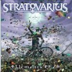

|
|
||
Stratovarius : Elements Pt.2 (2003) |
|

http://www.stratovarius.com |
1. Alpha & Omega 6:38 |
7.8/10 |
|
Unos meses después del lanzamiento del Elements Pt.1, Stratovarius nos presenta la segunda parte, este Elements Pt.2. El hecho de que una banda saque dos discos en tan poco tiempo no suele ser buena señal y en este caso creo que han sacado, entre ambos álbumes, demasiados temas que en otras circunstancias la banda habría guardado para acompañar a los singles, como bonus tracks, o para futuros recopilatorios. En cualquier caso, como esto parece que ha sido más una estrategia de la discográfica (Nuclear Blast) que un deseo de la banda, y que corrían rumores (no se si estarán confirmados) de que iba a ser lo último que Stratovarius publicara con este sello, esperemos que para su próximo disco puedan tomarse el tiempo necesario para trabajarlo y pulirlo hasta el nivel al que nos tienen acostumbrados. El disco empieza flojo con "Alpha & Omega", un tema atmosférico, inquietante, y con un Timo Kotipelto excelente al micrófono, pero de ritmo pausado y desarrollo demasiado lento, que se hace algo pesado. "I Walk to my own Song" si es una canción digna de abrir un disco de Stratovarius: rápida, progresiva pero descaradamente metalera, permite que Timo Kotipelto demuestre todo lo alto que su voz puede llegar y que Timo Tolkki ofrezca una muestra de su virtuosismo a la guitarra en algunos pasajes frenéticos del solo. "I'm Still Alive" es otro buen tema, cimentado en el doble bombo, orientado alrededor de un fantástico estribillo y con otro vertiginoso solo de guitarra. La cuarta pista, "Season of Faith's Perfection", es una balada con una primera parte de sonido limpio, que deja paso a las guitarras distorsionadas, y un estribillo vibrante que quizás la salva de ser tan solo una balada más. "Awaken the Giant" ofrece un ritmo pulsante, atmósfera tenebrosa, la voz ligeramente distorsionada a ratos, pero le falta algún momento realmente brillante y se hace larga. El sexto corte, "Know the Difference", saca a la luz el estilo neoclásico típico de Stratovarius, que junto al doble bombo y a la fantástica voz de Kotipelto forman una fantástica canción digna de los mejores Stratovarius. "Luminous" es otra balada, que combina pasajes con suaves sonidos electrónicos con otros dominados por la guitarra eléctricas, y un solo interesante tocado con un pedal de wah, pero que en conjunto tampoco es especialmente destacable. De "Dreamweaver" lo más llamativo es el trabajo con varias capas de voces del estribillo, pero por lo demás es un tema bastante normalito. El disco termina con "Liberty", otra balada, más emocionante que "Luminous", con un trabajo a la guitarra más destacable, otra vez con efecto wah, y un estribillo melodioso y espectacular. |
||
Rubén Béjar |
||